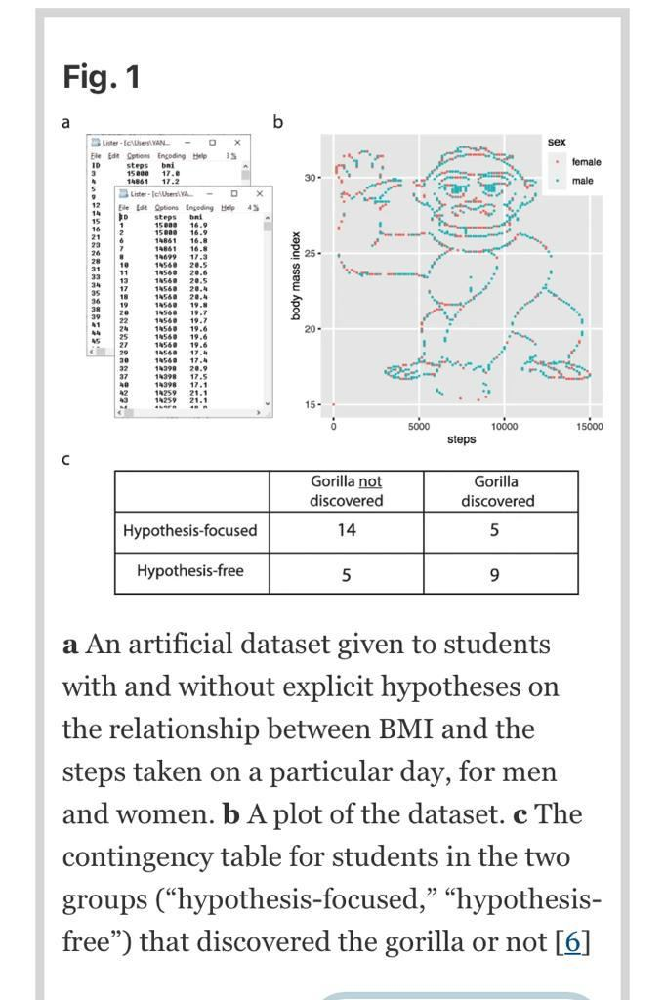
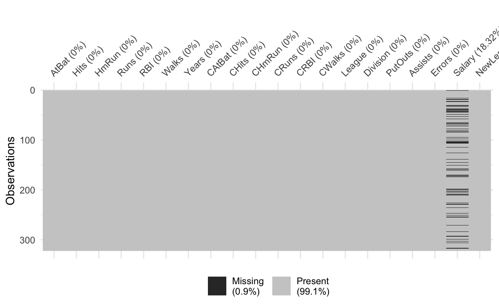

This tutorial follows R lab #2 from Chapter 6 of An Introduction to Statistical Learning by James, Witten, Hastie, and Tibshirani. You can see the lab from ISLR translated to Python by Jordi Warmenhoven and N Jannasch here.
## ── Attaching packages ─────────────────────────────────────────────────────────────────────────── tidyverse 1.2.0 ──## ✓ ggplot2 3.3.1 ✓ purrr 0.3.4
## ✓ tibble 3.0.1 ✓ dplyr 1.0.0
## ✓ tidyr 1.1.2 ✓ stringr 1.4.0
## ✓ readr 1.3.1 ✓ forcats 0.5.0## Warning: package 'tidyr' was built under R version 4.0.2## ── Conflicts ────────────────────────────────────────────────────────────────────────────── tidyverse_conflicts() ──
## x dplyr::filter() masks stats::filter()
## x dplyr::lag() masks stats::lag()## Loading required package: Matrix##
## Attaching package: 'Matrix'## The following objects are masked from 'package:tidyr':
##
## expand, pack, unpack## Loaded glmnet 4.0-2# If you are running this tutorial on your own computer, first install all required packages by uncommenting the line below
# install.packages(c("tidyverse", "learnr", "ISLR", "naniar", "glmnet"))
library(learnr)
library(tidyverse)The ISLR provides a good old classic dataset Hitters that has records and salaries for baseball players. In the next line of code we are asking to give us the Hitters dataset from the ISLR package and we save it as Hitters in our own R session.
Hitters <- ISLR::HittersHitters dataset’s list of variables: * AtBat - Number of times at bat * Hits - Number of hits * HmRun - Number of home runs * Runs - Number of runs * RBI - Number of runs batted * Walks - Number of walks * Years - Number of years in the major leagues * CAtBat - Number of times at bat during his career * CHits - Number of hits during his career * CHmRun - Number of home runs during his career * CRuns - Number of runs during his career * CRBI - Number of runs batted in during his career * CWalks - Number of walks during his career * League - A factor with levels A and N indicating player’s league in 1986 * Division - A factor with levels E and W indicating player’s division * PutOuts - Number of put outs * Assists - Number of assists * Errors - Number of errors * Salary - 1987 annual salary on opening day in thousands of dollars * NewLeague - A factor with levels A and N indicating player’s league in 1987
Hitters %>% str()## 'data.frame': 322 obs. of 20 variables:
## $ AtBat : int 293 315 479 496 321 594 185 298 323 401 ...
## $ Hits : int 66 81 130 141 87 169 37 73 81 92 ...
## $ HmRun : int 1 7 18 20 10 4 1 0 6 17 ...
## $ Runs : int 30 24 66 65 39 74 23 24 26 49 ...
## $ RBI : int 29 38 72 78 42 51 8 24 32 66 ...
## $ Walks : int 14 39 76 37 30 35 21 7 8 65 ...
## $ Years : int 1 14 3 11 2 11 2 3 2 13 ...
## $ CAtBat : int 293 3449 1624 5628 396 4408 214 509 341 5206 ...
## $ CHits : int 66 835 457 1575 101 1133 42 108 86 1332 ...
## $ CHmRun : int 1 69 63 225 12 19 1 0 6 253 ...
## $ CRuns : int 30 321 224 828 48 501 30 41 32 784 ...
## $ CRBI : int 29 414 266 838 46 336 9 37 34 890 ...
## $ CWalks : int 14 375 263 354 33 194 24 12 8 866 ...
## $ League : Factor w/ 2 levels "A","N": 1 2 1 2 2 1 2 1 2 1 ...
## $ Division : Factor w/ 2 levels "E","W": 1 2 2 1 1 2 1 2 2 1 ...
## $ PutOuts : int 446 632 880 200 805 282 76 121 143 0 ...
## $ Assists : int 33 43 82 11 40 421 127 283 290 0 ...
## $ Errors : int 20 10 14 3 4 25 7 9 19 0 ...
## $ Salary : num NA 475 480 500 91.5 750 70 100 75 1100 ...
## $ NewLeague: Factor w/ 2 levels "A","N": 1 2 1 2 2 1 1 1 2 1 ...Let’s do the simplest exercise. Use head() function to see the top 6 rows of the dataset. Remember, you can use hint button to see the answer.
Hitters %>% ____()Hitters %>% head()We want to predict Salaries of baseball players, so it would be great if we first plotted the data to get acquainted with the data.
Hitters %>%
ggplot(aes(x = ____)) + geom_density() + theme_bw()Hitters %>%
ggplot(aes(x = Salary)) + geom_density() + theme_bw()As you can see the target variable – Salary – has a long right tail, which is usually expected for income data. So no surprises here.
You can also check how Salary is distributed depending on the Years of experience of the player.
Hitters %>%
ggplot(aes(x = ____, y = ____)) + geom_point() + theme_bw()Hitters %>%
ggplot(aes(x = Years, y = Salary)) + geom_point() + theme_bw()In general, I expect that for your own projects you would inspect thoroughly the data by visualizing different combinations of variables first, before even starting to do any regressions.
Always plot the data and inspect it. Otherwise, you might end up running regressions on a gorilla. Yes, that was a real experiment. Teachers gave students a dataset to test a hypothesis. Many students did not visualize the data, so they did not discover that something was really fishy (or gorilly) with the dataset. (Read more on the experiment here. 
One of the most important and painful topic in most of the projects is missing data. You might rush into data analysis, only to realize to your own regret that you should have inspected whether your data is complete earlier on.
Count how many missing observations there are for the following variables: Salary, Years, Runs
Hitters %>% count(is.na(____))Hitters %>% count(is.na(Salary))Alternatively, you can use naniar package to quickly visualize and amend missing values.
Hitters %>% naniar::vis_miss()
As you can see, only the information on salaries is missing for some players. Let’s delete those observations from the dataset.
Hitters_clean <- Hitters %>%
filter(!is.na(Salary))
Hitters_clean %>% count(is.na(Salary))Is it potentially a big problem?
sum(is.na(Hitters$Salary))/nrow(Hitters)## [1] 0.1832298Yes, 18.3% of observations have no information on salaries. That’s a big chunk. If it was less than 1%, it would be another story.
For example, if those 18.3% are the top-earning players, then the predictions based on the non-missing players will consistently undershoot the true salaries. If those 18.3% are all low-earning players, then the opposite happens: the predictions will consistently overshoot the true salaries. The best scenario happens when the data is missing completely at random, i.e., the players with missing information about their salaries are on average the same as those for whom we do not know the information.
The last hypothesis we can actually check with the data by running a simple regression of is.na(Salary) on all other variables, where is.na(Salary) is a logical vector that equals TRUE for observations with missing salary data and False, otherwise.
lm(is.na(Salary) ~ ., data = Hitters) %>% summary()##
## Call:
## lm(formula = is.na(Salary) ~ ., data = Hitters)
##
## Residuals:
## Min 1Q Median 3Q Max
## -0.51887 -0.24540 -0.10636 0.07017 0.96769
##
## Coefficients:
## Estimate Std. Error t value Pr(>|t|)
## (Intercept) 4.855e-01 8.934e-02 5.434 1.14e-07 ***
## AtBat -2.860e-04 6.825e-04 -0.419 0.6755
## Hits 1.517e-03 2.608e-03 0.581 0.5613
## HmRun -6.635e-04 6.819e-03 -0.097 0.9226
## Runs -3.902e-03 3.250e-03 -1.201 0.2308
## RBI -3.003e-03 2.861e-03 -1.050 0.2947
## Walks -2.178e-04 1.985e-03 -0.110 0.9127
## Years 2.032e-03 1.298e-02 0.157 0.8757
## CAtBat 6.936e-05 1.394e-04 0.498 0.6191
## CHits -7.122e-04 6.982e-04 -1.020 0.3085
## CHmRun -4.376e-04 1.734e-03 -0.252 0.8010
## CRuns 8.558e-04 7.654e-04 1.118 0.2644
## CRBI 4.459e-04 7.562e-04 0.590 0.5559
## CWalks -2.792e-04 3.305e-04 -0.845 0.3990
## LeagueN -1.385e-01 8.885e-02 -1.559 0.1200
## DivisionW -1.197e-02 4.220e-02 -0.284 0.7769
## PutOuts 1.632e-04 8.211e-05 1.988 0.0477 *
## Assists -2.054e-04 2.441e-04 -0.842 0.4007
## Errors -1.629e-03 4.869e-03 -0.335 0.7381
## NewLeagueN 6.658e-02 8.906e-02 0.748 0.4553
## ---
## Signif. codes: 0 '***' 0.001 '**' 0.01 '*' 0.05 '.' 0.1 ' ' 1
##
## Residual standard error: 0.3681 on 302 degrees of freedom
## Multiple R-squared: 0.1508, Adjusted R-squared: 0.09733
## F-statistic: 2.822 on 19 and 302 DF, p-value: 0.0001029As you can see from the regression table above, the incidence of missing salary information is correlated with PutOuts variable. Look, I know nothing about baseball. If I really cared about proper prediction model of salaries of baseball players in 1986, I would read a lot about the topic and tried to reconstruct plausible reasons why the salary information is missing in this dataset. The first thing I would do, I would learn how this dataset was collected. If this did not answer my questions, I would contact those who collected the data and ask them whether those players with missing salary data are in some way special.
It is quite likely that in real life you will have to deal with data far from ideal: missing data, non-random samples. While in general the prediction tools are easy to use once the data is clean and representative, the very first steps may be messy and may require your direct judgment and intuition on what to do with the data. (And to my opinion, that’s where you would generate the value added to the company or organization you are working.)
In this scenario, you are not interested in the true salaries of the baseball players for whom that information is not public information. Hence, those players are not in the population of your interest, so you can just delete those observations without a second thought.
Bottomline: You need to understand 1) whether the observations with missing data is in the population of your interest and 2) if yes, understand why some data is missing, test the hypothesis that the data is missing at random, and provide plausible explanations.
But for now, let’s assume we are in an ideal situation that the data is missing at random. So we proceed our work with Hitters_clean dataset.
Now, before we go into the nitty-gritty details of Ridge regression, let’s return back to the simplest example of the height of musicians at the Vienna conservatory, which I gave to illustrate how inference tools are not the same as prediction tools.
Question: Can you now explain why the sample mean is not the best prediction using bias-variance trade-off intuition?
We learn in econometrics that OLS is BLUE – Best Linear Unbiased Estimator. But we also learned this week that Unbiased \(\neq\) Best prediction. There is always some room to shrink the estimator towards zero to get an even better predictor than an unbiased estimate. Why? Because we are reducing the variance of the model, and hence, we are increasing its accuracy. The simple example with heights is the case that illustrates it. Even if we do not have any other covariates (predictors), shrinking the estimated mean is still optimal. It becomes even more important when we add covariates (predictors), which may bring a lot of noise.
Let’s work now with one predictor. Suppose you want to predict \(y\) from \(x\), so you run the following regression:
\[y_i = \alpha + \beta x_{i} + \epsilon\]
Example 1: You get the following result
| Parameter | Est. | S.E. |
|---|---|---|
| \(\alpha\) | 0 | 0.01 |
| \(\beta\) | 20 | 100 |
Example 2: Suppose, alternatively, that the result is:
| Parameter | Est. | S.E. |
|---|---|---|
| \(\alpha\) | 0 | 0.01 |
| \(\beta\) | 20 | 0.01 |
Answers explained: In the first example, \(x\) is a junky predictor, it is not estimated precisely, so it probably adds too much variance to the prediction model. You might be better off by just throwing it away from the model. In the second example, \(x\) brings a lot of precise signal about \(y\), but we still shrink it a bit. Why? Because \(\beta = 20\) is an unbiased estimator, and we know that we can improve the prediction accuracy of \(y\) from \(x\) by shrinking \(\beta\) a bit towards zero.
Finally, how can you implement the shrinkage routine in practice when you have \(p\) predictors? \(\Rightarrow\) By using Ridge regession:
\[\min_{\beta}\underbrace{(y_i - \beta_0 - \sum_{j = 1}^p \beta_j x_{ij})^2}_{RSS} + \underbrace{\lambda \overbrace{\sum_{j=1}^p \beta^2_j}^{\text{(l2 norm)}^2}}_{\text{shrinkage penalty}}\] The first part of Ridge regression is just like OLS: it minimizes the in-sample sum of squared residuals (RSS). But the second part of Ridge is the shrinkage penalty – a new term. It penalizes the sum of squared coefficient. l2 norm is a square root of the sum of squared coefficients. Notice the parameter \(\lambda\) – the penalty parameter.
The idea is to fit many different models at different levels of penalty paramter \(\lambda\) and then choose the model that provides the lowest RSS in a new (validation) sample.
Did you know that Ridge regression is a special case of Tikhonov regularization? But the use of Ridge regressions in statistics was introduced by Hoerl and Kennard in 1970.
library(glmnet)We are going to use glmnet library to perform Ridge and Lasso regressions. It uses coordinate descent (Fu, 1998, Daubechies et al., 2004) to solve for parameters \(\beta\) at a given penalty parameter \(\lambda\).
What is coordinate descent? It is a numerical optimization process that solves the problem through multiple iterations by guessing solutions until convergence:
“How does coordinate descent work” was a real job interview question I got. So now you are also ready to answer it, if you get this question.
Let’s create a grid with penalty parameters \(\lambda\), ranging from as high as 10^10 to as small as 0.01.
grid <- 10^seq(10, -2, length = 100)
# The first element
grid[1]## [1] 1e+10# The last element
grid[100]## [1] 0.01We are going to use glmnet() function. Unfortunately, glmnet function does not accept dataframes, but only data in a matrix form. To do so, we use model.matrix function to convert a dataframe Hitters_clean into matrix x ready for Ridge regression. It converts the factor variables (e.g., League into 1/0 dummy variables automatically.) Also, we save salaries in a separate vector y.
Importantly, Ridge (and Lasso) regressions are not invariant to re-scaling. In OLS, you can multiply a predictor by 100 (e.g., transfer meters into centimeters), then the new estimated parameter \(\beta\) will drop by 100. This is not true for Ridge regressions. The scale of the predictors matter because of the shrinkage penalty. For example, you do not want to have one variable that is represented in tons on a scale from (0 to 0.01) and simulatenously have a variable that is on a scale from (1000 to 100000). Hence, the common approach is to standardize all variables:
\[ \tilde{x}_{ij} = \frac{x_{ij}}{\sqrt{\frac{1}{n}\sum_{i =1}^{n}(x_{ij} - \bar{x}_j)^2}} \]
i.e., each predictor is centered around its own mean and the standard deviation is set to one.
glmnet function automatically standardizes the predictors \(x\) for you by default (i.e., you do not even need to specify standardize= TRUE, but I kept it in the formula so you do not forget that glmnet does the standardization under the hood).
Amend the code below to simultaneously fit 100 Ridge regressions (one per each parameter \(\lambda\) in our grid). The first element in the glmnet function should point to the matrix of predictors. The second element is the target variable that we want to predict. Function glmnet from the package glmnet can run a Ridge regression (set alpha = 0) or a Lasso regression (set alpha = 1), or an Elastic Net regression (set alpha = m, where \(0<m<1\)). Finally, lambda parameter can take the grid of lambda which you have just created.
The penultimate line str(ridge_mod) will show the structure of the object ridge_mod that you train. The last line shows the dimensions of the estimated coefficients.
# Create the matrix of predictors. Ask to create a matrix, as if you are regressing Salary on all other variables in the dataset
x <- model.matrix(_____ ~.,data = _______)[,-1] # [,-1] drops the first column, which is intercept
# Create the vector with target variable
y <- ________$_____
# Train Ridge models at different lambdas (from the grid)
ridge_mod <- glmnet(x = x, y = y, alpha=_, lambda=____, standardize = TRUE)
# Look at the structure of the new object with the results of Ridge regressions
str(ridge_mod)
# Check the dimensions of the coefficients
dim(coef(ridge_mod))# Create the matrix of predictors. Ask to create a matrix, as if you are regressing Salary on all other variables in the dataset
x <- model.matrix(Salary~., data = Hitters_clean)[,-1] # [,-1] drops the first column, which is intercept
# Create the vector with target variable
y <- Hitters_clean$Salary
# Train Ridge models at different lambdas (from the grid)
ridge_mod <- glmnet(x = x, y = y, alpha=0, lambda=grid, standardize = TRUE)
# Look at the structure of the new object with the results of Ridge regressions
str(ridge_mod)
# Check the dimensions of the coefficients
dim(coef(ridge_mod))As you can see coefficients of ridge_mod are a matrix of 20 rows (20 predictors) by 100 columns (100 lambdas).
We have trained 100 different Ridge models. Why don’t check what is going on for one specific model. Ask the code below to show the value of the 50th lambda, coefficients estimated for that lambda, l2 norm (remember that l2 norm does not include the intercept), and the sum of squared residuals (RSS).
\[\min_{\beta}\underbrace{(y_i - \beta_0 - \sum_{j = 1}^p \beta_j x_{ij})^2}_{RSS} + \lambda \underbrace{\sum_{j=1}^p \beta^2_j}_{\text{(l2 norm)}^2}\]
cat("The value of the 50th lambda in the grid is: ", ______$lambda[50])
cat("\n The coefficients are: \n")
coef(_______)[,__]
cat("l2 norm is ", sqrt(sum(coef(______)[-1,__]^2)))
cat("\n The sum of squared residuals is : ", sum((y - coef(______)[1, __] - (x %*% coef(______)[-1,__]))^2) )
# ridge.mod$lambda[60]cat("The value of the 50th lambda in the grid is: ", ridge_mod$lambda[50])
cat("\n The coefficients are: \n")
coef(ridge_mod)[,50]
cat("l2 norm is ", sqrt(sum(coef(ridge_mod)[-1,50]^2)))
cat("\n The sum of squared residuals is : ", sum((y - coef(ridge_mod)[1, 50] - (x %*% coef(ridge_mod)[-1,50]))^2) )
# ridge.mod$lambda[60]Now, let’s visualize how the sum of squared residuals (the in-sample fit) and l2 norm (i.e., the sum of squared coefficients) change with \(\lambda\). The first line already correctly estimates the l2 norm. See how I re-used the code from the above for l2 norm sqrt(sum(coef(ridge_mod)[-1,50]^2)) and how I used function map_dbl from purrr package) in order to loop that function over different columns of coef(ridge_mod)[-1,.x] matrix. Note that .x is a loop value. Since we pass a vector from 1 to 100 (.x=c(1:100)), the value of .x at the first iteration will be 1. And the value at the last iteration will be 100. In other words, function map_dbl maps object .x = c(1:100) into a function that we specify after ~ and then it collects the results in a numeric vector of class double. Function map_chr, for example, returns a character vector, while map_dfr returns a dataframe.
Use the code from the example for the fiftieth lambda in order to estimate the vector of the sum of squared residuals RSS for different values of lambda. Then plot l2 norm and RSS to see that indeed l2 norm falls while RSS increases with lambda. Note that we transform the x-axis with a log transformation, otherwise we would not see anything on the plot due to extremely high values of lambda.
# Calculate l2 norm for all lambdas in the grid
l2 <- map_dbl(.x=c(1:100), ~sqrt(sum(coef(ridge_mod)[-1,.x]^2)))
# Calculate RSS for all lambdas in the grid
RSS <- map_dbl(.x= c(1:100), ~__________________________________)
#Plot
# create a dataframe that collects all necessary information for plotting
data.frame(lambda_values = ____,
l2 = l2,
RSS = RSS
) %>%
# Transform the dataset into a long format such that there will be just three columns: lambda_values, a character variable key which takes just two values "l2" or "RSS", and the numeric variable value which contains the value of that given key (l2 or RSS) for that given lambda
gather(key = "key", value = "value", -lambda_values) %>%
#Plot the values of l2 and RSS in a single plot against the values of lambda. To achieve this. facet by the value of the variable called `key`
ggplot(aes(x = lambda_values, y = value)) +
geom_point() +
facet_grid(key ~ ., scales="free") +
scale_x_log10() # Calculate l2 norm for all lambdas in the grid
l2 <- map_dbl(.x= c(1:100), ~sqrt(sum(coef(ridge_mod)[-1,.x]^2)))
# Calculate RSS for all lambdas in the grid
RSS <- map_dbl(.x= c(1:100), ~sum((y - coef(ridge_mod)[1, .x] - (x %*% coef(ridge_mod)[-1,.x]))^2) )
#Plot
# create a dataframe that collects all necessary information for plotting
data.frame(lambda_values = grid,
l2 = l2,
RSS = RSS
) %>%
# Transform the dataset into a long format such that there will be just three columns: lambda_values, a character variable key which takes just two values "l2" or "RSS", and the numeric variable value which contains the value of that given key (l2 or RSS) for that given lambda
gather(key = "key", value = "value", -lambda_values) %>%
#Plot the values of l2 and RSS in a single plot against the values of lambda. To achieve this. facet by the value of the variable called `key`
ggplot(aes(x = lambda_values, y = value)) +
geom_point() +
facet_grid(key ~ ., scales="free") +
scale_x_log10() As you can see, RSS and l2 norm behave exactly as we expect them to behave with respect to \(\lambda\). Which model at which \(\lambda\) shall we choose for predictions? We cannot say, until we test the models using cross-validation.
You can also check what happens to an individual coefficient once lambda increases. For example, what happens to the coefficient in front of Years of experience of the player? Plot that coefficient against the values of lambda.
data.frame(lambda_values = _____,
coefficient = coef(ridge_mod)["Years", ]) %>%
ggplot( #finish the codedata.frame(lambda_values = grid,
coefficient = coef(ridge_mod)["Years", ]) %>%
ggplot(aes(x = lambda_values, y = coefficient)) +
geom_point() +
scale_x_log10() Wow. Not only the coefficient in front of
Yearsvariable changes in magnitude, it also changes the sign at different values of the penalty parameter lambda. Notice how the coefficient slowly approaches zero at higher values of lambda, as we would expect.
Note that we are not restricted to choose from just 100 lambdas that we put into our grid. We can ask the ridge_mod object that we trained also to produce the coefficients for a model at some new level of \(\lambda\) somewhere in between the grid values. For example, in the code below, we ask to show us the predicted coefficients for lambda = 30, while the value of 30 is not one of the values we trained our model with.
cat("Is 50 one of the grid values? ", 30 %in% grid)## Is 50 one of the grid values? FALSEcat("\n The coefficients for lambda = 30 are \n ")##
## The coefficients for lambda = 30 are
## predict(ridge_mod, s=30, type="coefficients")## 20 x 1 sparse Matrix of class "dgCMatrix"
## 1
## (Intercept) 7.348270e+01
## AtBat -5.997006e-01
## Hits 2.567240e+00
## HmRun -1.386773e+00
## Runs 1.050565e+00
## RBI 7.387286e-01
## Walks 3.212662e+00
## Years -8.443232e+00
## CAtBat 8.833201e-05
## CHits 1.281737e-01
## CHmRun 6.780811e-01
## CRuns 2.802481e-01
## CRBI 2.509286e-01
## CWalks -2.476544e-01
## LeagueN 5.167454e+01
## DivisionW -1.220061e+02
## PutOuts 2.612378e-01
## Assists 1.585784e-01
## Errors -3.607432e+00
## NewLeagueN -1.620116e+01In the video lecture on the prediction routine, I talked about 3 samples: training sample, validation sample, and test sample.
Unfortunately, we do not have enough observations to waste the sample by splitting it in 3 equal parts. So, we are going to use a cross-validation routine instead.
We split the sample by randomly assigning observations into a training and test samples.
set.seed(1)
# Create an set of observations to include into the training sample
train <- sample(1:nrow(x), nrow(x)/2)To perform cross-validation with just one line of code use function cv.glmnet(). Fill in the blanks in the code below. Make sure to feed the function the training sets for x and y. Specify that you want ridge regression by choosing the correct value for alpha. Ask to standardise the predictors and make a 10-fold cross-validation. Plot the results. And get lambda that minimizes the cross-validation error.
set.seed(1)
cv_out <- cv.glmnet(x = ______, y = ______, alpha=_, standardize = ____, nfolds = __)
plot(cv_out)
bestlam <- cv_out$lambda.min
cat("The best lambda is : ", bestlam)set.seed(1)
cv_out <- cv.glmnet(x = x[train,], y = y[train], alpha=0, standardize = TRUE, nfolds = 10)
plot(cv_out)
bestlam <- cv_out$lambda.min
cat("The best lambda is : ", bestlam)The first vertical line indicates the value of log(lambda), where the expected MSE is minimized. The numbers on top of the plot indicate the number of predictors with non-zero coefficients at each value of lambda. As you can see, Ridge regression has non-zero coefficients for all 19 predictors at any value of lambda, i.e., Ridge is shrinking the coefficients toward zero but never makes them exactly zero.
As you can see, the MSE first slightly decreases but the increases as we make lambda higher. Why is that so? Does a higher \(\lambda\) correspond to a more flexible or less flexible model?
Now since we know the value of the best lambda, we know our best model (out of those we trained), and we can check the expected prediction errors from that model on the test set.
ridge_bestmod <- glmnet(x = _____, y = _____, alpha = _, lambda = _____, standardize = TRUE)
ridge_pred <- predict(_____, s=____, newx=_______)
errors <- (______ - ridge_pred)
# Plot the errors (We use as.numeric() command here, because the object `errors` is a named vector, which for some reason throws errors when we want to insert it inside a dataframe)
data.frame(prediction_errors = as.numeric(errors)) %>%
ggplot(aes(x= prediction_errors)) + geom_density()ridge_bestmod <- glmnet(x = x[train, ], y = y[train], alpha = 0, lambda = bestlam, standardize= TRUE)
ridge_pred <- predict(ridge_bestmod, s=bestlam, newx=x[-train,])
errors <- (y[-train] - ridge_pred)
# Plot the errors (We use as.numeric() command here, because the object `errors` is a named vector, which for some reason throws errors when we want to insert it inside a dataframe)
data.frame(prediction_errors = as.numeric(errors)) %>%
ggplot(aes(x= prediction_errors)) + geom_density()sqrtMSE <- sqrt(mean(errors^2))
cat("The test sqrt of MSE is ", sqrtMSE)## The test sqrt of MSE is 373.9855# out=glmnet(x,y,alpha=0)
# predict(out,type="coefficients",s=bestlam)[1:20,]So you find that the model that you trained and cross-validated on a training set has the \(\sqrt{MSE}\) on the test sample of around 373.9854711. But what does it mean?
Well, from the formula we remember that MSE is \(\frac{1}{n}(\sum_{i=1}^n y_i - \hat{f}(x_i))^2\) for \(i\) in the test set. So the square-root of MSE literally captures the deviation of the predictions around the true values. The first answer – “It is how far the prediction is on average away from the truth” – is wrong as it refers to the bias, or \(\frac{1}{n}\sum_{i=1}^n y_i - \hat{f}(x_i)\). Notice the difference? In fact, we can calculate the bias by finding the average of prediction errors in the code below. And it is -85.8830279 USD, which is different from 373.9854711 USD. The second answer – “It is the standard deviation of the prediction errors” – is wrong as it refers to the standard deviation of errors around its own mean. But we know that the predictions are biased, so they are not centered around zero (see the density plot of prediction errors above). By the way, the standard deviation of errors is 365.3773479 USD, which is different from the square-root of MSE (373.9854711 USD). So, the square-root of MSE is neither the bias of prediction errors, nor their deviation around their own mean, but it is a measure of how spread out the prediction errors are around zero.
cat("Prediction errors have mean ", mean(errors), " and standard deviation of ", sd(errors))## Prediction errors have mean -85.88303 and standard deviation of 365.3773So, finally, you can train the chosen model on the full sample and use it to predict salaries on new data (in case you return back to 1987 and want to impress American baseball league with your skills to predict their salaries). Remember, that we already trained Ridge regressions at different lambdas on the full sample at the very beginning and we called that object ridge_mod. We just need to collect the coefficients of the ridge model that corresponds to the best lambda that we got at the cross-validation stage.
predict(ridge_mod,type="coefficients",s=bestlam)## 20 x 1 sparse Matrix of class "dgCMatrix"
## 1
## (Intercept) 15.46209975
## AtBat 0.07640574
## Hits 0.86308801
## HmRun 0.59870362
## Runs 1.06416544
## RBI 0.87873337
## Walks 1.62579483
## Years 1.35341840
## CAtBat 0.01131653
## CHits 0.05732472
## CHmRun 0.40542580
## CRuns 0.11455464
## CRBI 0.12166650
## CWalks 0.05295541
## LeagueN 22.17770610
## DivisionW -79.18681200
## PutOuts 0.16648537
## Assists 0.02959948
## Errors -1.37068562
## NewLeagueN 9.06869822So is the spread of 373.9854711 USD of predictions around the true values a good or a bad sign? Is this model doing objectively well? If we compare to the standard deviation of salaries in the sample – 451.1186807 USD – then we see that the model is actually improving a lot over a simple prediction model where you do not vary prediction at all, but just always predict the average of 535.9258821 USD.
The question is: Could you do better?
Perhaps, there is still room for improvement when you are using Ridge regression. There are at least two ways how you can tweak the Ridge model setup in the hope that it may produce smaller prediction errors. Can you suggest any? Can you try whether those models would beat the initial model in cross-validation? (Note: any model you actually choose should not be based on the test set, but should be chosen at the cross-validation step using only the training set! The test set is only for the winning model.)
When you do your own project for this course, do not forget to show that you tried your best to actually find the best model setup. Also giving the intuition. Then, explain how well your chosen prediction model behaves out-of-sample, and give the sense of the size.
Now, let’s turn to Lasso regression.
Lasso regression is similar to Ridge with the only difference that it penalizes the sum of the absolute values of coefficients:
\[ \min_{\beta}\underbrace{(y_i - \beta_0 - \sum_{j = 1}^p \beta_j x_{ij})^2}_{RSS} + \underbrace{\lambda \sum_{j=1}^p|\beta_j|}_{\text{shrinkage penalty}}\]
Because we penalize the absolute value of \(\beta\) coefficients, Lasso may give corner solutions compared to Ridge (i.e., it may set \(\beta_j\) to be exactly zero for some \(j\)). \(\Rightarrow\) Lasso is used also as variable selection procedure. This is very useful in situations when number of predictors \(p\) is larger than sample \(n\). Can you even run an OLS when \(p>n\)? No! Can you run a Lasso regression? Yes!
Did you know that Lasso regression was introduced to statistics by Robert Tibshirani in 1996? He is also one of the authors of the ISLR textbook, which we use for the first two weeks of my part of the course.
Now, here is your time to exercise and repeat the steps you saw/made for Ridge tutorial, but now for Lasso. You can simply take the code for Ridge and change alpha = 1 in the glmnet(..., alpha = 1, ...) function. This is an excellent opportunity to revise all the steps of prediction modeling again in one go. Use the same train and test sets we used for Ridge.
# Cross-validation stage.
cv_lasso <- _______________
# Plot the cross-validation MSE. Save the best lambda which minimizes the expected MSE
(... code here ...)
# Estimate Lasso model at the best lambda. Save its predictions for salaries for the test set
lasso_reg <- _______________
lasso_pred <- _______________
# Print the best lambda for Lasso. Compare the square-root of the MSE for the test sample using Lasso to the one obtained by Ridge.
y_test <- y[-train]
cat("Best lambda is ", _______, "\n")
cat("the test √MSE for lasso regression is ", _______, "\n")
cat("while the test √MSE for Ridge is ", _______)# Cross-validation stage. Plot the cross-validation MSE. Save the best lambda which minimizes the expected MSE
cv_lasso <- cv.glmnet(x[train,], y[train], alpha = 1, nfolds = 10)
# Plot the cross-validation MSE. Save the best lambda which minimizes the expected MSE
plot(cv_lasso)
bestlam_lasso <- cv_lasso$lambda.min
# Estimate Lasso model at the best lambda. Save its predictions for salaries for the test set
lasso_reg <- glmnet(x[train, ], y[train], alpha = 1, lambda = bestlam, standardize = TRUE)
lasso_pred <- predict(lasso_reg, s = bestlam, newx = x[-train, ])
# Print the best lambda for Lasso. Compare the square-root of the MSE for the test sample using Lasso to the one obtained by Ridge.
y_test <- y[-train]
cat("Best lambda is ", bestlam_lasso, "\n")
cat("the test √MSE for lasso regression is ", sqrt(mean((lasso_pred - y_test)^2)), "\n")
cat("while the test √MSE for Ridge is ", sqrt(mean((ridge_pred - y_test)^2)))Questions: